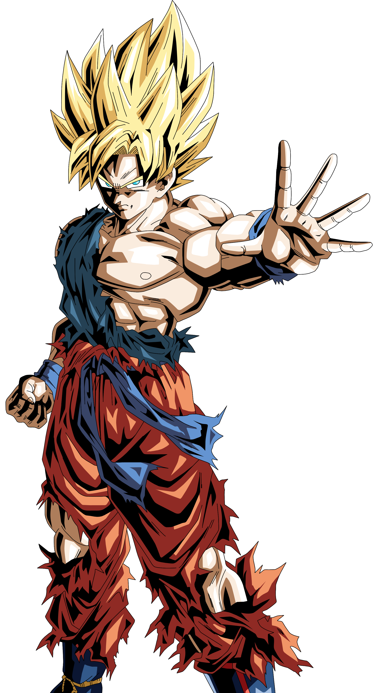

HI! I'M GOKU
About
Son Goku is a character and the main protagonist of the Dragon Ball manga series created by Akira Toriyama. He is based on Sun Wukong (known as Son Goku in Japan and Monkey King in the West), a main character of the classic 16th century Chinese novel Journey to the West, combined with influences from the Hong Kong action cinema of Jackie Chan and Bruce Lee. Goku made his debut in the first Dragon Ball chapter, Bulma and Son Goku, originally published in Japan's Weekly Shōnen Jump magazine on December 3, 1984. Goku is introduced as an eccentric, monkey-tailed boy who practices martial arts and possesses superhuman strength. He meets Bulma and joins her on a journey to find the seven wish-granting Dragon Balls. Along the way, he finds new friends who follow him on his journey to become a stronger fighter. As Goku grows up, he becomes the Earth's mightiest warrior and battles a wide variety of villains with the help of his friends and family, while also gaining new allies in the process.
"Even A Low-Class Warrior Can Surpass An Elite, With Enough Hard Work."
- Son Goku

Biography
Son Goku (孫そん悟ご空くう Son Gokū, Japanese pronunciation: [sõŋgoku]), born Kakarot (カカロット Kakarotto, Japanese pronunciation: [kakaɾot̚to]), is a Saiyan (Alien Species) raised on Earth and the main protagonist of the Dragon Ball series. He is the second child and youngest son of Bardock and Gine, the husband of Chi-Chi, and the father of Gohan and Goten. Originally sent to Earth by his parents as an infant, Kakarot was adopted by Grandpa Gohan and renamed Son Goku. A head injury at an early age altered Goku's memory, ridding him of his initial destructive nature and allowing him to grow up to become one of Earth's greatest defenders. Goku constantly strives and trains to be the greatest warrior possible, which has kept the Earth and the universe safe from destruction multiple times.